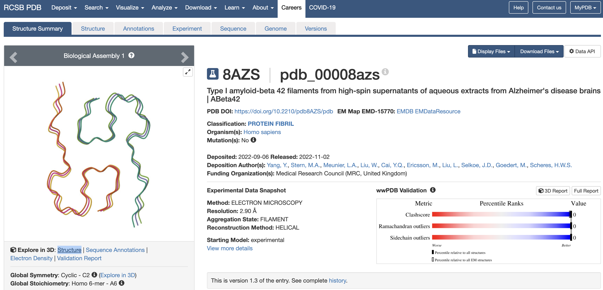
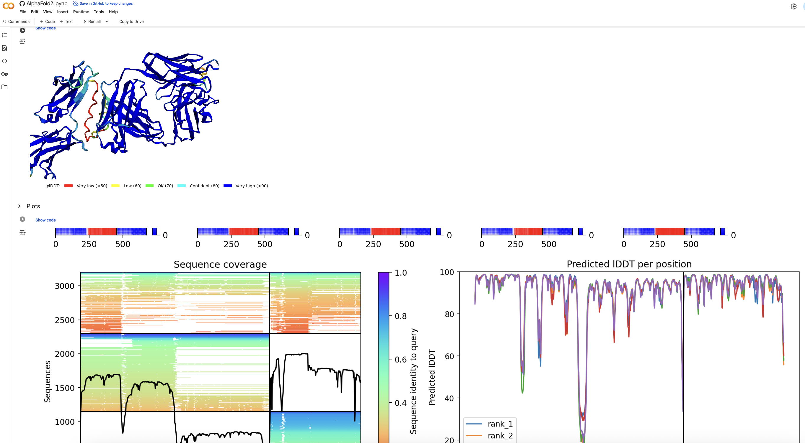
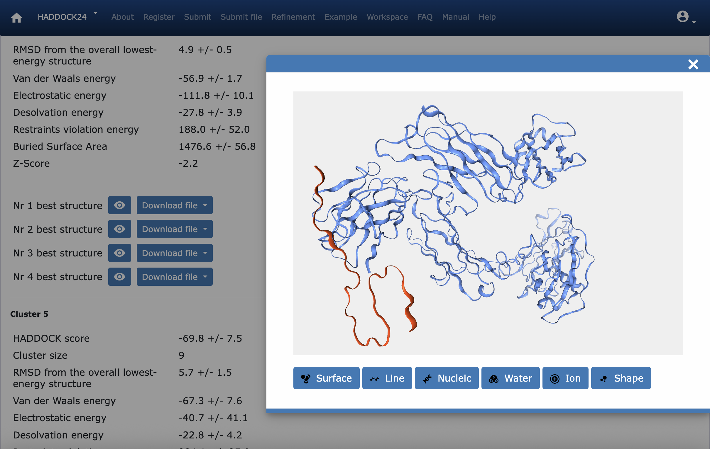
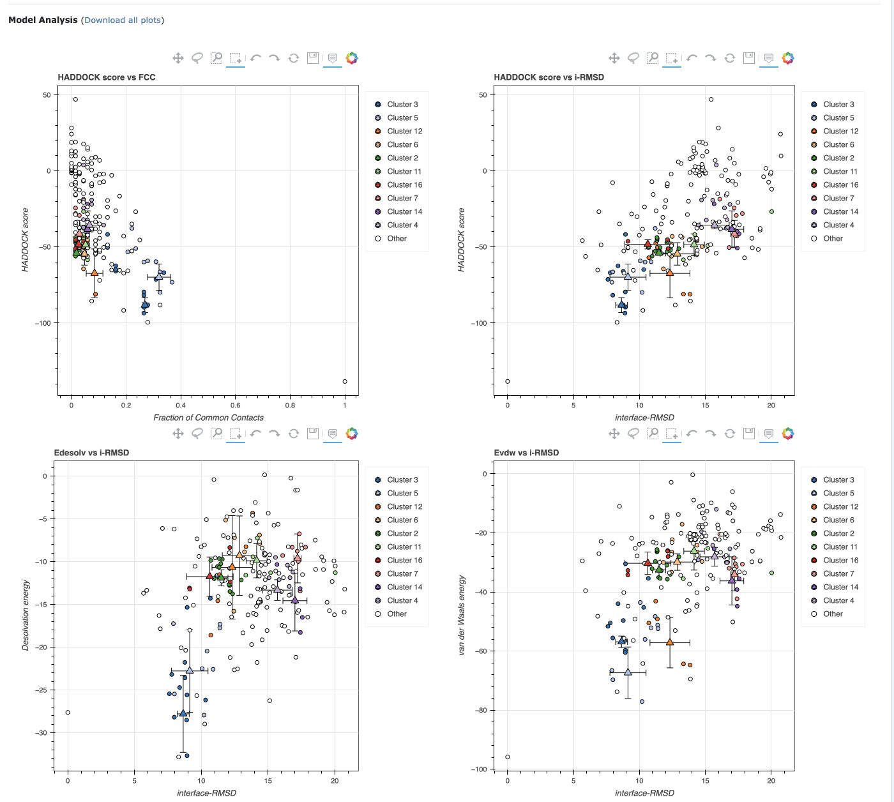

Modeling Drug Docking for Alzheimer's Disease
Background
Alzheimer's disease is a neurodegenerative disorder that primarily affects memory, thinking, and behavior.
The exact cause is still not fully understood, but it involves a complex interplay of genetic, environmental, and lifestyle factors.
One of the key mechanisms believed to be responsible are Amyloid-beta Plaques.
Fragments of a protein called amyloid precursor protein (APP) are abnormally cleaved, leading to accumulation of amyloid-beta (Aβ) peptides.
These peptides clump together to form plaques in the brain, which disrupt communication between neurons and trigger immune responses.
These plaques are toxic to neurons and are one of the disease’s hallmarks.
An Anti-Amyloid Therapy approved by the FDA in 2023 is Lecanemab (Leqembi), which is a monoclonal antibody that targets soluble Amyloid-β protofibrils.
Once bound, the lecanemab–Aβ complex is cleared by the brain's resident immune cells (microglia).
The outcome is slower disease progression, and modest slowing of cognitive decline.
Benefits of in-silico modeling
In-silico modeling of drug/antibody - protein docking (in this case, lecanemab – Aβ) is extremely useful in screeing drug candidates. It can save years in the drug design pipeline by narrowing down the list of viable candidates, which also brings down the overall cost of drug development. More broadly, use of such in-silico methods can also improve access to life saving drugs, in low-resource environments such as developing countries. This also opens researcher access globally, and speeds up collaborative innovation.
Implementation
The drug docking simulation involved the following steps:
- HADDOCK uses the 3D structures of both the target protein (Amyloid-β) and the drug/antibody (lecanemab). It then uses energy minimization to find the docking conformations.
- Amyloid-β structure is available in the PDB (Protein Data Bank) as 8AZS
- However, lecanemab structure is not available in the PDB. Hence, we must find its folding structure using a tool like AlphaFold2
- DrugBank makes the lecanemab sequence publically available as drug ID DB14580
- Once both structures are available, HADDOCK is used to find a conformation with the following scores:
- HADDOCK score -88.2 +/- 4.2
- RMSD from the overall lowest-energy structure 4.9 +/- 0.5
- Van der Waals energy -56.9 +/- 1.7
- Electrostatic energy -111.8 +/- 10.1
- Desolvation energy -27.8 +/- 3.9
- Restraints violation energy 188.0 +/- 52.0
- Buried Surface Area 1476.6 +/- 56.8
- Z-Score -2.2
- The results show strong binding and close interactions.
Screenshots
   Demo Video
Github repo
View project artefacts on GitHub: https://github.com/yourusername/project-repo